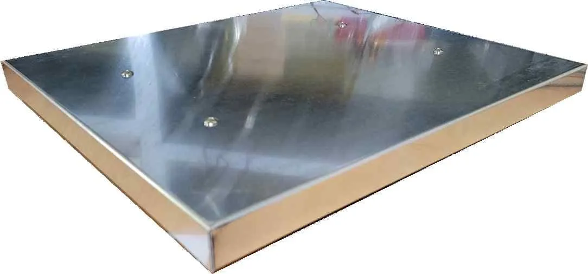
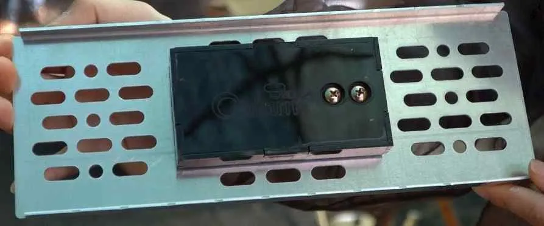

벌통 무게로 꿀 뜰 때 가늠한다…비온팜 디지털 저울
벌집틀 한 장에 꿀 2~3kg, 체중계 대신 전용 저울로 벌통·화분떡 무게 추이를 본다

스마트 양봉 기업 온팜(브랜드 비온팜)은 2025년 4월 홈페이지에 공개한 소개서에서 무게 측정 시스템을 소개했다. 이 시스템은 벌통 무게로는 채밀(꿀 뜨기) 시점을, 화분떡(꽃가루 등으로 만든 꿀벌 먹이) 무게로는 먹이 줄 때를 확인한다. 비온팜은 벌통에 꿀이 충분히 차면 꿀벌이 꿀을 덜 모으기 때문에 겉으로 보이지 않는 벌통 속 꿀의 양을 확인해야 한다고 밝혔다.
벌집틀 한 장에 꿀 2~3kg
소개서에 따르면 꿀벌은 소비(벌집틀) 한 장마다 2~3kg의 꿀을 저장한다. 벌통 하나에는 소비가 통상 6~10장, 많게는 20장 들어간다. 소비에 꿀이 차는 만큼 벌통도 무거워진다.
꿀벌은 유밀기(꽃이나 나무에서 꿀을 가져올 수 있는 시기)에 왕성하게 움직인다. 소개서는 이때 벌통에 꿀이 충분히 모이면 꿀벌이 꿀 모으는 양을 줄여 양봉 농가의 소득이 떨어지므로 벌통에 꿀이 얼마나 찼는지 제때 알아야 한다고 설명했다.
체중계로 재던 벌통
벌통 속 꿀은 밖에서 보이지 않는다. 소개서는 꿀의 양을 확인하려면 벌통마다 뚜껑을 열거나 저울로 무게를 재야 한다고 적었다.
비온팜은 기존 저울로 재는 방식에도 한계가 있다고 지적했다. 소개서에는 “국내에는 전용제품이 없어 기존 체중계나 저울을 사용하고 있는 실정이라 정확한 수치 계산이 어려운 상황”이라는 대목이 있다. 해외에서는 전용 제품을 만들어 디지털 양봉 시스템과 함께 팔고 있다고 소개서는 덧붙였다. 같은 쪽에는 일반 저울이나 체중계로 벌통 무게를 재는 사진과 비온팜 디지털 벌통 저울 사진이 나란히 실렸다.

사진: 비온팜이 2025년 소개서에 실은 디지털 벌통 저울 (자료: 비온팜)무게 추이로 보는 채밀 시점
소개서의 제품 구성표를 보면 디지털 벌통 저울(모델명 BO-L100)의 측정 범위는 0~200kg이고 회사가 제시한 종합오차는 0.03%다.
소개서는 이 무게 측정 시스템을 두고 “꿀 수확 시점을 벌통 무게의 추이변화, 그래프로 인지할 수 있음”이라고 적었다. 벌통 무게가 시간에 따라 어떻게 바뀌는지를 그래프로 보고 꿀 뜰 때를 가늠하는 방식이다.
화분떡 무게 측정
비온팜은 화분떡의 무게를 재는 화분떡 저울(모델명 BO-L10)도 소개했다. 측정 범위는 0~5kg, 회사가 제시한 종합오차는 0.03%다.
소개서는 무밀기(꽃꿀이 나지 않는 시기)에 애벌레를 기르려면 화분떡이 꼭 필요하다고 적었다. 화분떡 소모량을 무게로 확인하면 제때 먹이를 넣어 줄 수 있다고 설명했다. 비온팜은 봉군(꿀벌 무리)의 활동성도 짐작할 수 있다고 덧붙였다.

사진: 비온팜이 소개서에 ‘2024년 벌통·화분떡 무게 측정 시스템’으로 실은 장치 (자료: 비온팜)비온팜 홈페이지 제품 소개란에는 주요 기능 설명이 올라 있다. 벌통 무게 변화로 꿀 수확 시점을 예측하고 화분떡 잔여량을 확인해 강군(세력이 강한 꿀벌 무리) 유지에 활용한다고 적혀 있다.
자료: 비온팜 홈페이지(2026년 10월 8일 확인), 비온팜 2025 소개서
저작권자 © 윙윙통신 무단 전재 및 재배포 금지